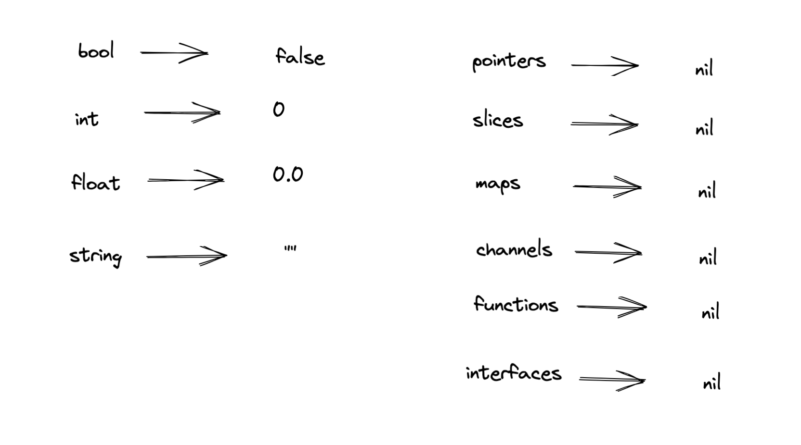
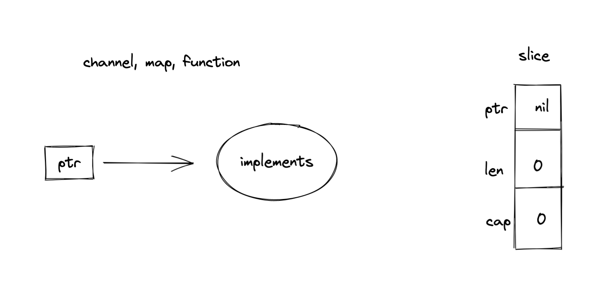
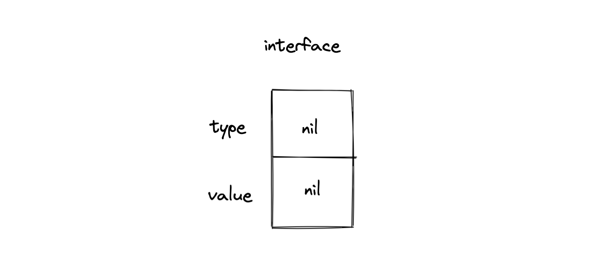
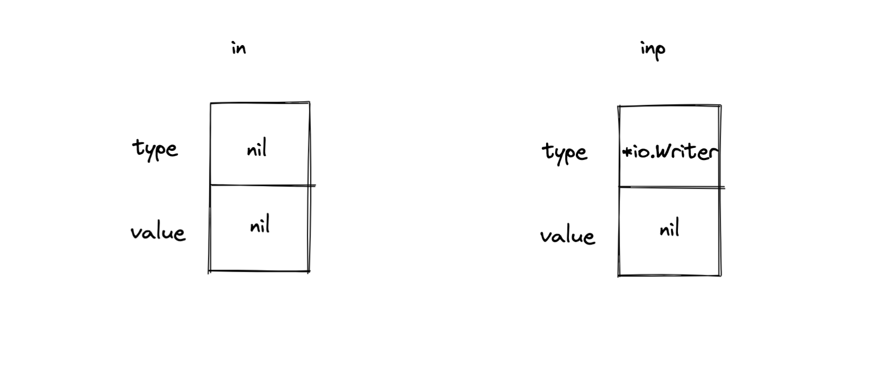

一文看懂 nil
写过 Go 代码的人，肯定对下面的代码不陌生：
if err != nil {
//...
}
Go 项目中这行代码会大量存在，这里可能隐藏着陷阱。
1. Go 中的 nil
Go 中 nil 代表零值，表示什么都没有，其他语言中也有类似的设计，比如 Java 中的 null。
也不是所有类型的零值都是 nil，Go 中不同类型的零值如下：

Go 中的数据类型可以分为基本类型和复合类型。
基本类型的零值都不同，有的是数字，有的是空字符串，对于复合类型， 零值都是 nil。
零值在有些情况下会让程序崩溃，比如指针的零值，因为指针是指向一块内存地址，如果指针为 nil，那么就表示不指向任何地址，那么使用这个指针内存操作就会出现 panic。
还有一点需要注意，nil 并不是关键字，nil 在 Go 中是这样定义的：
var nil Type // Type must be a pointer, channel, func, interface, map, or slice type
nil 的类型只能是指针，channel、函数、接口和 slice。
也就是说这样写代码是完全合法的：
var nil = make(map[string]string)
但永远不要这么做，否则程序就完蛋了。
2. nil 中的陷阱
从 nil 的定义可以知道，nil 只能和指针等几种类型一起使用。
指针的结构相对简单，就是指向一个内存地址，我们可以很安全的使用 nil 来判断指针是不是为空，有没有指向内存地址。
channel、map、function 和 slice 的本质都是在使用指针，所以也可以使用 nil 来判断这些类型是否初始化、是否能使用。slice 特殊一点，还有 len 和 cap 两个属性，但不影响 nil 的判断：

而 interface 中的 nil，有隐藏的陷阱。
inteface 的接口与上面的类型都不一样，interface 由两部分组成，一部分是接口的类型，另一部分是接口的值:

先看下面代码的输出：
var in io.Writer
fmt.Printf("%T\n", in) // nil
var inP *io.Writer
fmt.Printf("%T\n", inP) // *io.Writer
%T 表示输出这个值的类型。
声明上面的变量之后，此时 in 和 inP 的结构是下面这样的：

如果再接着写下面的代码：
var in io.Writer
if in != nil {
in.Write([]byte("logs"))
}
var inP *io.Writer
if inP != nil {
inP.Write([]byte("logs")) // 这里会发生 panic
}
inP 的 type 不是 nil，那么 inP 就不等于 nil。在使用接口时要注意，只有接口的类型和值都是 nil 时，这个接口才等于 nil，否则不相等。
错误处理是 Go 程序的重要组成部分，但是这里也容易出现陷阱，看如下的代码：
func main() {
err := Do() // nil
fmt.Printf("result: %+v\n", (err == nil)) // true
}
func Do() *DoError { // nil
return nil
}
type DoError struct {
}
func (d *DoError) Error() string {
return "doError"
}
上面的代码返回的不是接口，而是 DoError 类型的指针，所以判断是否为 nil 没问题。
如果换种形式，看下面的代码，返回的是 error 的接口类型，但是这个接口的类型是 *DoError，值是 nil，这样一来，就和预期的结果不符合。
func main() {
err := Do() // error(*DoError, nil)
fmt.Printf("result: %+v\n", (err == nil)) // false
}
func Do() error { // error(*DoError, nil)
var err *DoError
return err // nil
}
判断 err 是不是 nil 是非常高频的使用场景，在处理这些错误时，要非常小心。
3. nil 的其他作用
nil 除了作为零值之外，还有其他的用途。
nil 作为方法的接受者是完全合法的，这里 p 是一个 *Person 类型的 nil：
func main() {
var p *Person // nil
p.SayHi()
}
type Person struct {
}
func (p *Person) SayHi() {
fmt.Println("hi")
}
nil 还可以作为默认值，下面的代码应该也看的不少了，通常情况下，第二个参数我们都会直接传入 nil，这里 nil 的含义是使用默认的配置，我们在自己的代码中也可以这样使用。
http.HandleFunc("localhost:8080", nil)
4. 小结
nil 是指针，channel、函数、接口和 slice 等类型的零值，其中 interface 的零值有点特殊，只有在类型和值都是 nil 的时候，这个接口才是 nil。
nil 除了作为零值使用之外，还有很多其他的用途，比如作为方法的接受者，表示默认值。
文 / Rayjun